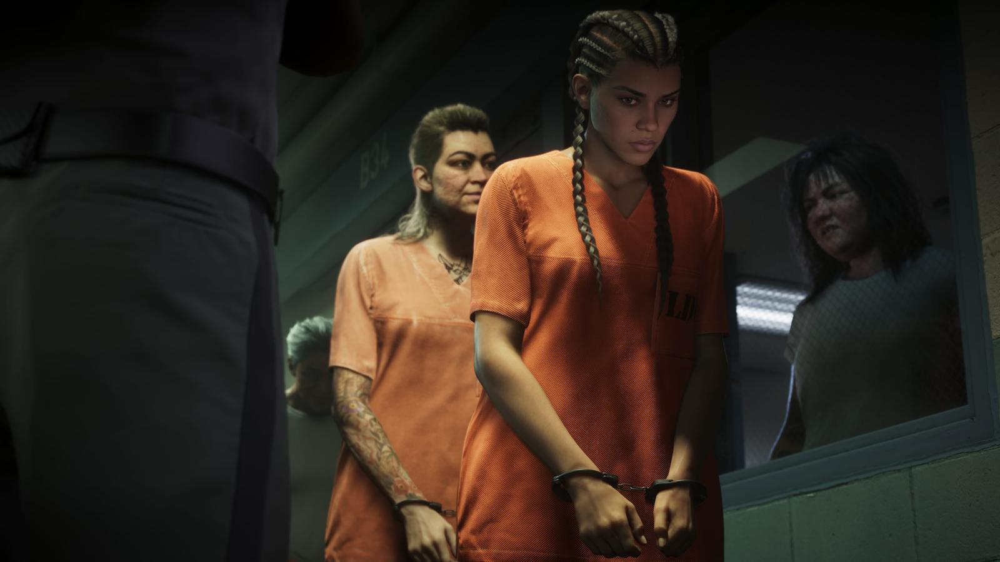
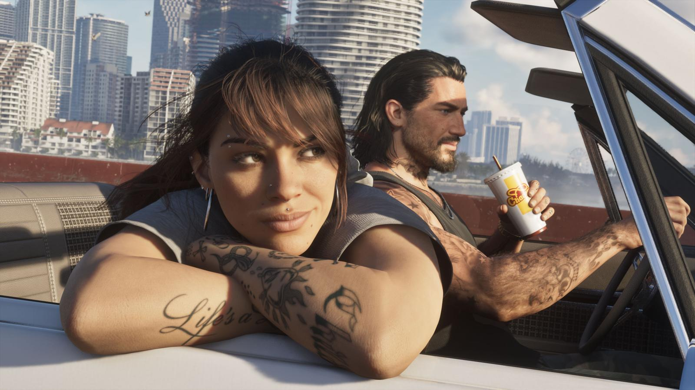

Трейлеры GTA 6: что показали
Опубликовано:

- Трейлер 1 — декабрь 2023, музыка — Tom Petty «Love Is a Long Road».
- Трейлер 2 — 6 мая 2025, музыка — The Pointer Sisters «Hot Together».
- Трейлеры смотрите на официальном YouTube-канале Rockstar Games.
Трейлер 1 (декабрь 2023)
Первый трейлер Rockstar выпустила в декабре 2023 года — на день раньше плана, после утечки. В нём впервые показали Лусию (в тюрьме штата Леонида), Вайс-Сити, пляжи, ночную жизнь, болота и много сцен, стилизованных под ролики из соцсетей. Под финал — ограбление магазина Лусией и Джейсоном. Музыка — «Love Is a Long Road» Тома Петти.
Трейлер 2 (май 2025)
Второй трейлер вышел 6 мая 2025 года, вместе с новостью о переносе. Он больше рассказывает о героях: Джейсон забирает Лусию из тюрьмы, появляются Кэл, Брайан, Буби Айк, Рауль, Дре’Куан и Real Dimez. Музыка — «Hot Together» The Pointer Sisters.

Источники: Rockstar Games — официальный сайт GTA VI (rockstargames.com/VI), Rockstar Newswire, Rockstar Store, официальный YouTube-канал Rockstar Games.
Разборы кадров, слухи и факты за 30 секунд. Подписывайтесь:
YouTubeInstagramTikTok